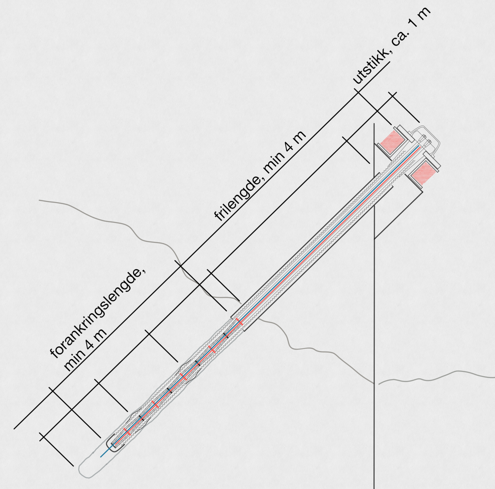

Velkommen til Etterspenning.no
Etterspenning.no er under oppbygging – men målet er klart: Dette skal bli Norges ledende ressursside for informasjon, veiledning og data om forankringer og etterspenning. Her vil du finne tekniske forklaringer, regelverk, anbefalinger og praktiske verktøy samlet på ett sted – for ingeniører, entreprenører og rådgivere. Ønsker dere hjelp til forankringer så er det bare å ta kontakt. Har over 15 års erfaring med forankringer, installasjon, injisering og oppspenning.

Typisk lineforankring i spunt.